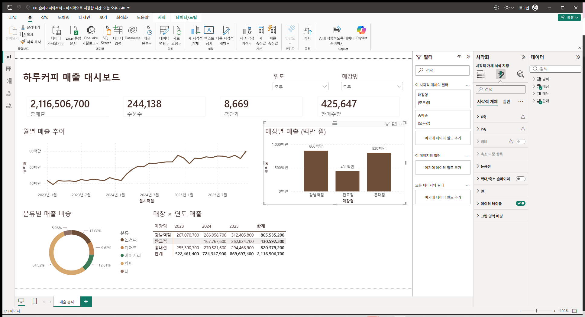
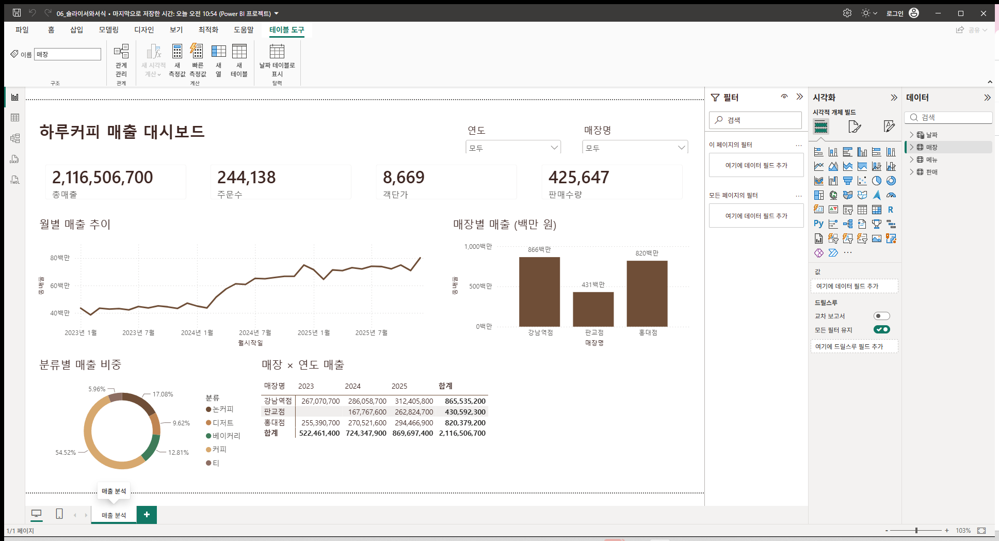

6장. 슬라이서와 서식 - 보기 좋고 쓰기 쉬운 보고서
학습 목표
- 슬라이서로 보는 사람이 직접 연도·매장을 고르게 한다.
- 서식 창에서 제목, 데이터 레이블, 표시 단위를 바꾼다.
- 테마 파일을 불러와 보고서 전체 색을 한 번에 바꾼다.
- 카드를 정확한 숫자로 보여 준다.
6-1. 슬라이서
슬라이서는 보고서를 보는 사람이 누르는 "필터 단추" 다. 5장에서 차트를 눌러 거른 것을 정식 단추로 만든 것이라고 보면 된다.
- 캔버스 빈 곳을 누르고 시각화 창의 슬라이서 아이콘(깔때기 달린 표 모양)을 누른다.
- 날짜 → 연도 를 필드 칸에 넣는다.
- 오른쪽 위에 작게 놓는다.
- 같은 방법으로 매장 → 매장명 슬라이서를 하나 더 만든다.
슬라이서 모양을 바꾸려면 슬라이서를 고르고 시각화 창의 시각적 개체 서식 지정(붓 모양 아이콘) → 슬라이서 설정 → 옵션 → 스타일 에서 고른다.
| 스타일 | 모양 | 쓰는 곳 |
|---|---|---|
| 세로 목록 | 체크 상자 목록 | 항목이 몇 개 안 될 때 |
| 타일 | 단추가 가로로 나열 | 연도처럼 짧은 항목 |
| 드롭다운 | 누르면 펼쳐지는 목록 | 자리를 아끼고 싶을 때 (이 과정) |
슬라이서에서 2025 를 고르면 페이지의 모든 차트가 2025년 숫자로 바뀐다. Ctrl 을 누른 채 고르면 여러 개를 고를 수 있다.
필터 창 vs 슬라이서 오른쪽 필터 창에도 조건을 걸 수 있다. 필터 창은 만드는 사람이 "이 보고서는 항상 2024년 이후만" 처럼 고정하는 데, 슬라이서는 보는 사람이 바꿔 보는 데 쓴다.
6-2. 서식 창 둘러보기
시각적 개체를 하나 고르고 시각화 창 위쪽의 두 번째 아이콘 시각적 개체 서식 지정(붓 모양)을 누른다.

서식 창은 두 탭으로 나뉜다.
| 탭 | 바꾸는 것 |
|---|---|
| 시각적 개체 | 그 차트만의 설정 - 축, 데이터 레이블, 색, 범례 |
| 일반 | 모든 시각적 개체 공통 - 제목, 테두리, 배경, 크기 |
6-3. 제목, 데이터 레이블, 표시 단위
매장별 매출 막대 차트를 고르고 차례로 바꾼다.
- 일반 → 제목 → 텍스트 를
매장별 매출 (백만 원)으로. - 시각적 개체 → 데이터 레이블 을 켜기. 막대 위에 값이 나온다.
- 데이터 레이블 → 값 → 표시 단위 를 백만.
866백만처럼 보인다. - Y축 → 값 → 표시 단위 도 백만.
도넛형 차트는 비율이 중요하다.
- 시각적 개체 → 세부 정보 레이블 → 옵션 → 레이블 내용 을 총 퍼센트 로.
- 가운데 큰 숫자(합계)가 거슬리면 시각적 개체 → 중앙값 을 끈다.
카드는 정확한 숫자로 보여 준다.
- 카드를 고르고 시각적 개체 → 설명 → 값 → 표시 단위 를 없음 으로.
2십억이2,116,506,700이 된다.
메뉴 이름(설명, 세부 정보 레이블, 중앙값 등)은 차트 종류와 Power BI 버전에 따라 조금 다르다. 서식 창 위쪽의 검색 칸에
표시 단위처럼 바꾸고 싶은 것을 치면 바로 찾아 준다.
6-4. 테마 - 보고서 전체 색 바꾸기
차트마다 색을 바꾸는 대신 테마로 한 번에 바꾼다.
- 리본 디자인 탭을 누른다. 왼쪽에 테마 목록이 그림으로 나온다.
- 기본 테마 중 하나를 골라 보자. 모든 차트의 색이 한꺼번에 바뀐다. (목록 오른쪽 ▾ 를 누르면 더 많은 테마가 보인다)
- 디자인 → 테마 가져오기 →
C:\study\power-bi-tutorial\data\하루커피_테마.json→ 열기.
예전 버전의 Power BI Desktop 에는 디자인 탭이 없고 보기 → 테마 ▾ → 테마 찾아보기 에 있다.
하루커피 테마는 커피색(갈색) 계열이다. 테마 파일은 색과 글꼴을 적은 간단한 JSON 글자 파일이다.
{
"name": "하루커피",
"dataColors": ["#6F4E37", "#C08552", "#3E7C59", "#D7A86E", "#8D6E63", "#E07A5F", "#4E6E81", "#B5A642"],
"background": "#FFFFFF",
"foreground": "#3E2723",
"tableAccent": "#6F4E37",
"textClasses": {
"title": { "fontFace": "Malgun Gothic", "color": "#3E2723", "fontSize": 13 },
"label": { "fontFace": "Malgun Gothic" },
"callout": { "fontFace": "Malgun Gothic", "color": "#6F4E37" }
}
}
| 항목 | 뜻 |
|---|---|
dataColors |
차트가 차례로 쓰는 색 8개 (첫 색 #6F4E37 = 커피색) |
background, foreground |
배경색, 글자색 |
textClasses |
제목·레이블 글꼴과 크기 |
테마 JSON 을 메모장으로 열어
dataColors의 색 코드를 바꾸고 다시 불러오면 나만의 테마가 된다.
6-5. 페이지 정리
5장의 매출 분석 페이지를 이렇게 정리한다.
- 리본 삽입 → 텍스트 상자 로 제목
하루커피 매출 대시보드(글꼴 크기 22, 굵게). - 슬라이서 두 개를 오른쪽 위에.
- 카드 4개(총매출, 주문수, 객단가, 판매수량)를 제목 아래 한 줄로.
- 그 아래 꺾은선·막대, 맨 아래 도넛·행렬.
맞춤 여러 개체를 Ctrl 로 함께 고른 뒤 리본 서식 → 맞춤 → 위쪽 맞춤, 가로 간격 균등 을 쓰면 줄이 깔끔하게 맞는다.

정리
- 슬라이서 = 보는 사람이 고르는 필터. 스타일은 서식 창의 슬라이서 설정에서.
- 서식 창: 시각적 개체(그 차트만) / 일반(제목·테두리 등 공통). 검색 칸을 활용한다.
- 큰 숫자는 표시 단위(없음, 천, 백만)로 읽기 쉽게.
- 색은 테마로 한 번에. 테마 파일은 JSON.
확인 문제
- 연도 슬라이서에서 2024 만 고르면 카드의 총매출은 얼마인가? (부록 C 의 값과 비교)
- 매장명 슬라이서에서 판교점, 연도 슬라이서에서 2023 을 고르면 차트들이 어떻게 보이는가? 왜 그런가?
- 카드의 표시 단위를 천 으로 바꾸면 총매출이 어떻게 보이는가?
- 하루커피 테마의
dataColors첫 번째 색을#1F4E79(남색)로 바꿔 불러오면 무엇이 바뀌는가?